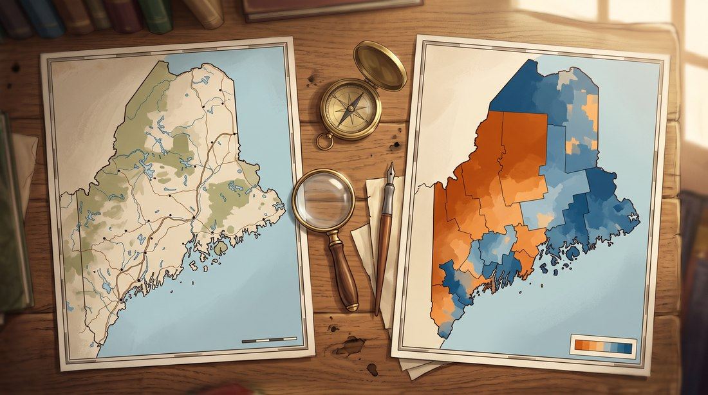
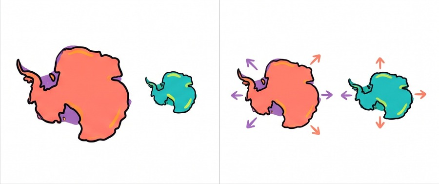
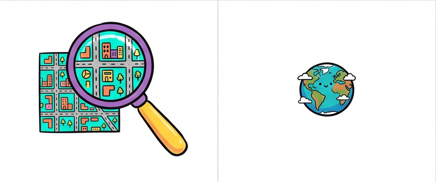
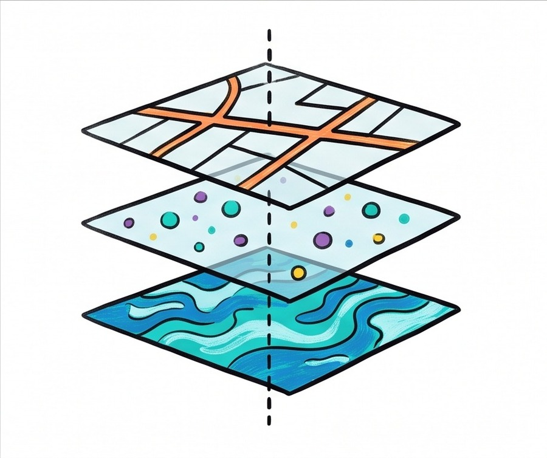

1.1 Introduction to Maps
- Two basic map types: Reference maps show the location of physical or political features (like a road atlas). Thematic maps show the spatial pattern of a specific topic or variable, like population density or election results.
- Every map distorts something: Because the Earth is a sphere and a map is flat, every map projection must trade off accuracy in shape, area, distance, or direction. No projection can preserve all four at once.
- Scale changes what you can see: Large-scale maps (like a city map) show a small area in great detail. Small-scale maps (like a world map) show a huge area with much less detail. Geographers must choose scale carefully depending on the question they are asking.
Try each question before revealing the answer.
1. What is the key difference between a reference map and a thematic map?
2. Why can no map projection preserve shape, area, distance, and direction all at the same time?
3. Would a city planner deciding where to place a new fire station most likely use a large-scale or small-scale map? Explain your reasoning.
- Explain the different types of maps geographers use to represent data.
- Explain the strengths and limitations associated with different map projections.
- Explain how the various principles of map making impact the ways in which maps are used.
Tap a term for its definition.
-
Definition: A map designed to show the absolute location of physical and human-made features, such as roads, boundaries, cities, and rivers. Significance: The most familiar type of map; used when the goal is simply finding where something is located. Example: A road atlas or a political map of the world showing country borders.
-
Definition: A map designed to show the spatial distribution or pattern of a specific topic, theme, or variable, rather than general location. Significance: The main tool geographers use to visualize and analyze data spatially; most AP Human Geography stimulus maps are thematic. Example: A map showing county-by-county population density, or a map showing which countries have the highest carbon emissions.
-
Definition: A mathematical method for representing the curved surface of the Earth on a flat map, which always introduces some form of distortion. Significance: Every map you have ever seen uses some projection, and understanding what that projection distorts is essential to reading maps critically. Example: The Mercator projection preserves direction and shape but dramatically distorts the size of landmasses near the poles.
-
Definition: A map projection developed in 1569 that preserves angles and shape, making it useful for navigation, but severely distorts the relative size of landmasses, especially near the poles. Significance: The most historically dominant world map projection, but also the most criticized for making high-latitude regions like Greenland and Russia look far larger than they actually are relative to equatorial regions. Example: On a Mercator map, Greenland appears roughly the same size as Africa, even though Africa is actually about fourteen times larger.
-
Definition: The relationship between distance on a map and the corresponding distance on the actual Earth's surface, usually expressed as a ratio. Significance: Determines how much detail a map can show; large-scale maps show small areas in detail, while small-scale maps show large areas with less detail. Example: A map with a scale of 1:10,000 (large scale, showing a neighborhood in detail) versus a map with a scale of 1:50,000,000 (small scale, showing the entire world).
-
Definition: Computer software that captures, stores, analyzes, and displays geographically referenced data in layers, allowing geographers to combine and compare multiple spatial datasets. Significance: The primary modern tool geographers use to build and analyze thematic maps, replacing most hand-drawn map production. Example: A city planning department using GIS to overlay flood zone data, population density, and road networks to decide where to build a new hospital.
Two Kinds of Maps, Two Different Jobs
Geographers use maps constantly, but not all maps do the same job. A reference map answers a simple question: where is this? It shows physical features like mountains and rivers, or human-made features like roads, cities, and borders. A road atlas, a subway map, and a world political map are all reference maps.

Reference maps show location. Thematic maps show patterns in a specific variable. AI-generated illustration
A thematic map answers a different question: how does one topic change across space? Instead of showing everything in a region, it isolates one variable, like population density, income, or election results, and shows how that variable changes from place to place. Most maps you will see in this course, and on the AP exam, are thematic maps, since they are the tool geographers use to make an argument about spatial patterns.
Why Every Map Lies a Little
Here is a problem geographers cannot avoid: the Earth is a sphere, and a map is flat. There is no way to turn a curved surface into a flat page without distorting something. That translation is called a map projection, and every projection has to pick which properties to keep and which to sacrifice: shape, area, distance, or direction. No projection can keep all four at once.
The best-known example is the Mercator projection, made in 1569 for ocean navigation. It preserves angles and shape, which made it useful for sailors plotting a straight compass course. But that accuracy has a cost: it badly distorts the size of land near the poles. On a standard Mercator map, Greenland looks about the same size as Africa. In reality, Africa is about fourteen times larger.

True relative size (left) versus the same two landmasses stretched to look equal in size (right), the kind of distortion a Mercator map introduces. AI-generated illustration
Scale: How Much Detail Can a Map Actually Show?
A map's scale describes the relationship between distance on the map and real-world distance, usually written as a ratio like 1:24,000. Scale determines how much of the Earth a map shows, and how much detail it can include.
- A large-scale map shows a small area in great detail, useful for tasks like navigating a neighborhood or planning where to put a new fire station.
- A small-scale map shows a large area with much less detail, useful for tasks like comparing population growth across a whole continent.
- The terms can feel backwards at first: "large scale" means lots of detail but a small area, while "small scale" means little detail but a huge area.

A large-scale map zooms in on fine local detail, like streets and buildings. A small-scale map zooms out to show a much bigger area with far less detail. AI-generated illustration
Choosing the right scale is a real decision, not just a setting. A geographer studying city traffic needs a large-scale map showing individual streets. A geographer studying global climate needs a small-scale map showing the whole planet. Using the wrong scale, too zoomed in, or too zoomed out, can lead to misleading conclusions.
How Modern Geographers Actually Build Maps
Almost no professional geographer draws maps by hand anymore. Modern mapmaking relies on a Geographic Information System, or GIS: software that stores spatial data in layers, roads in one, population density in another, flood zones in a third, and lets a geographer combine and compare them. A city planning department deciding where to build a hospital might use GIS to overlay population density, existing hospitals, and travel time by road, all at once, to find the best location. GIS has made mapping far faster and more precise, and it is now the standard tool of the field.

GIS stores map data in separate layers, roads, points of interest, water, that a geographer can stack and compare. AI-generated illustration
These videos will help you review Introduction to Maps and solidify key concepts before your exam.
- A reference map
- A thematic map
- A topographic map only
- A cadastral map only
- Comparing the true relative land area of countries near the equator versus the poles
- Ocean navigation, since it preserves angles and allows straight-line compass courses
- Showing population density with maximum accuracy
- Minimizing all forms of distortion simultaneously
- A small-scale map covering the entire country
- A large-scale map covering just the block and surrounding streets
- A thematic map with no defined scale
- A globe with a scale of 1:100,000,000
- Cartographers have not yet developed the technology needed to eliminate distortion
- Translating the curved surface of a sphere onto a flat surface always requires some mathematical distortion
- Governments require certain distortions for political reasons
- GIS software is not yet advanced enough to correct projection errors
- a reference map
- the Mercator projection
- a Geographic Information System (GIS)
- a small-scale map
Respond to parts A, B, C, and D. Use complete sentences.
A
Define a reference map.
B
Define a thematic map.
C
Explain why every map projection distorts at least one of shape, area, distance, or direction.
D
Explain one reason a city planner would choose a large-scale map rather than a small-scale map.
Respond to parts A, B, C, and D.
A
Identify the property of the Earth-to-map translation that this projection preserves well.
B
Describe the distortion shown by the Greenland-Africa comparison.
C
Explain why Greenland is distorted more than Africa on this map.
D
Explain one possible consequence of using this map as a default classroom world map.